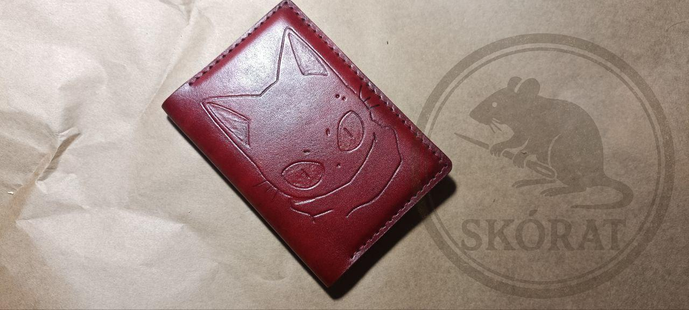
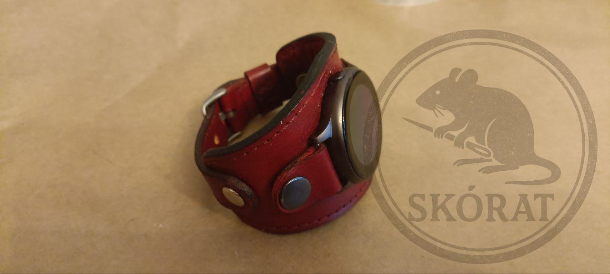

Witaj na mojej stronie!
Tworzę wyjątkowe wyroby ze skóry naturalnej, które łączą elegancję, funkcjonalność i pasję… przekazywaną z łapki do łapki.
🐭 Kim jestem?
Jestem Pan Szczurowski – mały, zwinny rzemieślnik! Skóry nie gryzą mnie w ogon, bo to ja z nich tworzę portfele, paski i inne cudeńka. Każdy kawałek to efekt cierpliwego dziobania, cięcia i szycia, aż futerko się jeży!
🧵 Rzuć okiem na moje dzieła
Nie musisz przeczesywać strychu – najnowsze i najulubieńsze wyroby znajdziesz tutaj. Elegancko, stylowo i z nutką pazura.
 📬 Masz pytanie albo chcesz coś nietypowego?
Skontaktuj się ze mną przez formularz kontaktowy albo napisz wiadomość — nawet jeśli chcesz portfel w kształcie sera, wszystko da się załatwić!